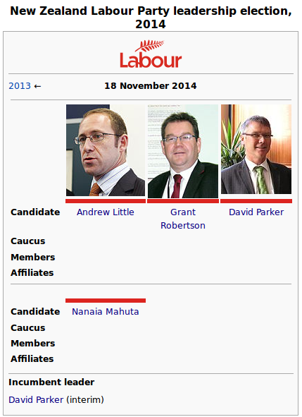

Why Politicians Should Use CC Licences
BY HARRY CHAPMAN
One thing which I’ve noticed recently is that New Zealand politicians are terrible at using Creative Commons licences to allow use of their photos. That’s a real shame, and in this post I’ll explore why it’s in politicians’ best interest to upload good quality photos of themselves and their activities using a permissive Creative Commons (CC) licence.
Politicians spend a whole heap of time engaged in self-promotion — after all, they need to be elected to their job. Hence a big part of a politician’s job is attending events, meeting with members of the public and industry groups, pressure groups etc. At the intersection of this relentless campaigning and the rise of social media is that if you look at politicians’ Twitter or Facebook profiles, they’re always posting pictures of that campaigning online. They want the most people possible to see that they’re working hard, talking to “hard-working New Zealanders”, “Mum and Dad investors”, and “people who just want to get ahead”. They want the maximum number of people looking at evidence of all the good work they’re doing.
So politicians post an inordinate number of photos and videos on social media, or perhaps Flickr. They also put out nice photos of themselves for use in the media free of charge. But the problem is that the copyright status of all these images is unclear, and most non-media people would be wary of using those photos for most purposes.
With a few extra clicks, all the content politicians are putting up to promote themselves and their causes could be made much more useful, both to the politician themselves, as well as to society. The easiest way to do that is to simply release all your photos and videos under a permissive Creative Commons licence (CC-BY or CC-BY-SA). That way, the potential of the content is unlocked. For example, someone editing a politician’s Wikipedia page doesn’t have to go out and take a (probably) crappy photo of them, rather they can use a high-quality, flattering photo of the politician and make them look good. Likewise a person putting together a booklet about different politicians’ policies can use a nice photo with a clear conscience. Or someone preserving political campaigns and associated material for posterity can archive content without running into legal barriers. Put simply, put your content on the internet with a CC licence and people will use it to do cool stuff.
 The difference a good photo makes on Wikipedia. Cunliffe’s staff could have uploaded a better photo – instead we have him looking sideways (text CC-BY-SA, photos PD)
The difference a good photo makes on Wikipedia. Cunliffe’s staff could have uploaded a better photo – instead we have him looking sideways (text CC-BY-SA, photos PD)
I can’t think of any reasons why politicians shouldn’t embrace Creative Commons licences: they can only win if they put nice photos of themselves onto the internet for people to view, use, and redistribute. (Perhaps politicians and their staff are worried what will happen if they post CC-licenced photos or video and then someone comes along and makes a parody of them. But in all likelihood the parody artist would have just used copyrighted material if the freely-licenced stuff wasn’t available, and the presence of your photos might just encourage this potential parody artist to use a more flattering picture of the politician!)
In light of all the positives, and the lack of downsides, it seems somewhat puzzling to me why more politicians haven’t embraced Creative Commons. I think the main reason probably comes down to a lack of awareness about Creative Commons licences and their potential benefits.
 Without freely licenced photos, you’re invisible on Wikipedia (text CC-BY-SA, Andrew pic PD, Grant and David pics by Charles Chauvel CC-BY)
{kind=link}
I thought I’d do a little digging to see what licence the various parties and politicians are using on their Flickr accounts. Flickr has creative commons licences built right in, so it’s a good way of putting photos on the internet.
- Labour Party: don’t seem to use their account, and all the photos are all rights reserved.
- Charles Chauvel: one of the only (ex) politicians I’ve seen using a permissive CC-BY licence for his photos. Even though he’s left politics in NZ, his photos are still used for stuff (e.g. pictures of Grant Robertson and David Parker on Wikipedia above).
- National Party: active account, licence their photos under the restrictive CC-BY-NC-ND (can use unchanged photos in non-commercial ways with attribution)
- Green Party: don’t have an account
- New Zealand First: don’t have an account
Harry Chapman is a politics student from Wellington, New Zealand, currently doing his Masters on the social acceptability of talking about politics on social media. This piece is reposted from his blog, Howdy Stranger, which has been made available under a Creative Commons Attribution 4.0 International License
Marsden Online Archive CC licensed
BY ELIZABETH HERITAGE
The University of Otago Library has launched a new online archive that for the first time allows researchers to search and mine Samuel Marsden’s historic journals and letters with technological online tools. The documents, detailing life on the nation’s first missions, were brought back from London more than a century ago by Thomas Hocken and have been transcribed by Retired Associate Professor Gordon Parsonson.
From the Marsden Archive website:
“This was a collaborative project undertaken by the University of Otago Library and the University’s Centre for Research on Colonial Culture. This project to create the Marsden Online Archive set out to achieve a number of objectives including:
- Creating digital objects from historically significant, unique, items in the Hocken Collections.
- Providing appropriate metadata for these resources, so to enrich contextual information and extend discoverability.
- Identifying and deploying appropriate technical and discovery standards to ensure accessibility, preservation and curation.
- Developing an appropriate platform, structure and web interface to make the collections useful as a research asset.”
Vanessa Gibbs, Business Analyst and Mining Marsden Project Manager at the University of Otago Library, speaks about the use of Creative Commons in the Mining Marsden Project.
“The Project Sponsor for the Marsden Online Archive was already familiar with Creative Commons licensing. He recommended the use of the Attribution-NonCommercial-ShareAlike 3.0 New Zealand (CC BY-NC-SA 3.0 NZ) licence to Gordon Parsonson (the copyright owner of the transcripts). We chose that particular licence because we wanted to make sure Gordon would continue to get attribution for his work, but we didn’t want to stop other researchers being able to build upon the material.
“From there it was an easy decision to use the same agreement for the digital images and metadata. The Creative Commons licence structure provides a clear and easily understood framework for the application of copyright licences. It was easy for us to apply the licence and it is easy for our users to understand the terms under which they can use the material.
“As we are using the same licence for both the transcripts and the images and metadata, we have set up a terms of use webpage. Here we detail when Gordon needs to be attributed and when the Hocken Collections needs to be attributed. This way there is no confusion for our users.
“We’ve had really great buy-in from staff on the Marsden Online Archive. They are now more open to using a Creative Commons licence for other material. I guess they see Marsden as a test case for using a CC licence and so far it has been very successful.
“There are already a number of other projects that Library staff are discussing using Creative Commons licensing for. Hopefully the success of the Marsden Online Archive will highlight the usefulness of the CC licensing framework.”
The National Library's New Use & Reuse Policy
BY MATT MCGREGOR
On May 20th 2014, the National Library of New Zealand (NLNZ) Te Puna Mātauranga o Aotearoa published its new use and reuse policy. In nine overarching principles, the policy aims to provide clarity and consistency around the use and reuse of the Library’s collections.
In line with international ‘open GLAM’ recommendations, principle four advises that 'negotiations with rights owners and donors will promote and be informed by the Creative Commons licensing framework as a mechanism to facilitate use and reuse of in-copyright works.'
Principle five states that 'where no copyright restriction applies, NLNZ will seek to provide the items for use and reuse with a statement of "no known copyright restrictions", after careful consideration of cultural and ethical issues relating to the items.'
Other principles address the use of appropriate resolution size, the Government’s Open Access and Licensing framework, and the treatment of ‘orphan’ works.
Mark Crookston, Digital Collection Strategy Leader at the Alexander Turnbull Library at the National Library of New Zealand, first drafted the policy in early 2013.
As he points out, “The purpose of the policy is to be able to have a consistent framework across the NLNZ for all of our reuse activities, from supply to management to delivery.
“On the supply side -- such as our negotiations and agreements with publishers and donors -- the policy attempts to clarify what we say about reuse, and the metadata we use, as early in the process as possible. On the delivery side, the policy covers clear and consistent statements, resolution, and also trying to get the Library to have more items available under 'no known copyright' restrictions.”
Mark notes that the initial conversations between the institution and the donor are critical, as this is where conditions around the reuse of collections items are formed. These conditions “flow through the entire life of the collection while it’s with us, which is in perpetuity," he says.
This is why principle four advises that 'negotiations with rights owners and donors will promote and be informed by the Creative Commons licensing framework.' As part of the implementation of the principle, the Library is likely to add a Creative Commons tick-box on the donor form, and provide donors with a range of explanatory resources. Donors will retain the right to restrict access to their work, if they so choose.
The passage of the use and reuse policy took around eighteen months. “It was a series of conversations. It was important that we took our time and listened. The different perspectives in society around use and reuse -- which can be a relatively contentious issue -- also exist in the Library itself. As an institution, we just talked our way through these issues.
“As a collecting institution, we managed to get a general agreement as to the purpose of what we do: we develop collections, and make them accessible (including through digitisation), because we want people to use them. It was important to clarify that the accessibility and use concepts were different. That was a critical point for moving forward with the policy work.”
Now that the policy has been adopted, the Library is working to implement its principles.
“We’re now establishing our process for the 'no known copyright' test, supporting principle five in the policy. We have a process to identify which collections go through the test, which includes considering any cultural or ethical reasons to restrict reuse - but still provide access.”
“A lot of great people in the Library have worked hard to determine those cultural and ethical criteria. Some of this work is challenging those criteria, but it’s also reaffirming some of them. We haven’t yet determined all of the reasons to restrict reuse on a cultural basis, though the idea with the 'no known copyright test' is that we’ll be able to determine some of those criteria as we go.”
“We’re also developing procedures to follow when some works are reused in a way that go against the restrictions set by the Library or by donors. This goes to that amorphous issue of trust.”
 Howitzer batteries in action at Spice Farm, 1918. (Royal New Zealand Returned and Services' Association: New Zealand official negatives, World War 1914-1918. Ref: 1/2-013131-G. Alexander Turnbull Library, Wellington, New Zealand. No known copyright restrictions)
Howitzer batteries in action at Spice Farm, 1918. (Royal New Zealand Returned and Services' Association: New Zealand official negatives, World War 1914-1918. Ref: 1/2-013131-G. Alexander Turnbull Library, Wellington, New Zealand. No known copyright restrictions)
The Library is also undertaking to map the array of restrictions placed on works by its donors over the years, to ensure that online users are always made aware of these restrictions, while at the same time aiming for clear and consistent rights statements across the Library’s collections.
As Mark wrote on the NLNZ blog, “It sounds simple but there are a lot of current, past, and future permissions and rights statements we have to be able to reflect, cutting across sizeable and diverse collections, in different systems with differing technological capability.”
The NLNZ policy follows the release of nearly 40,000 high-resolution images by the Museum of New Zealand Te Papa Tongarewa, under either a Creative Commons licence or a no-known-copyright statement.
Mark believes that other collecting institutions are likely to follow in the footsteps of Te Papa and NLNZ -- and other international institutions like the Rijksmuseum -- and is curious to see which approach other institutions take.
“While Te Papa and NLNZ share the same objectives -- i.e. getting no-known-copyright images in high resolution available online -- our approaches have differed slightly. Te Papa’s approach is more to release large numbers of images in order to demonstrate value, which is great, they’ve done a magnificent job. On the other hand, the Library took more of a policy approach to get our thinking and framework in place before implementing. I think both are relevant. It will be interesting to see how these approaches play out and what other institutions do. I think both Te Papa and the National Library have demonstrated useful paths forward.”
The first collection released by NLNZ under the policy is the ‘H series’ of photographs from World War One, which is, as Melanie Lovell-Smith points out, “the most comprehensive visual record of New Zealanders on the Western front from 1917 to 1918.”
Read Mark's blog about NLNZ's Use and Reuse Policy
Read the National Library of New Zealand's Use and Reuse Policy
{kind=link}
Te Papa's openly licensed images
BY ELIZABETH HERITAGE
The Museum of New Zealand Te Papa Tongarewa has now made nearly forty thousand images freely downloadable from its Collections Online digital database, giving the public access to the highest-resolution images it can and opening the way for creative reuse.
Around twenty thousand of these images are ‘No Known Copyright’ but upwards of seventeen thousand have been licensed under Creative Commons Attribution-Noncommercial-No Derivatives (CC BY-NC-ND) licence. “This is just the start”, says Rights Advisor Victoria Leachman. “We’re constantly improving our database, constantly collecting, constantly digitising. At launch we released thirty thousand and we aim to make another fifteen thousand images available for download by the end of this financial year.” Releasing images of the collection for download is now a core part of the workflow of copyright assessment for Victoria. “It’s no longer a one-off project. It’s now a business-as-usual activity and providing the highest-resolution image file we can means much wider scope for potential reuse.”
Te Papa’s engagement with issues of copyright, licensing and openness has been a long process and will continue to evolve. “We need to keep finding a balance between making images freely available and reuseable to benefit the public good and ensuring cost recovery so we astutely manage our taxpayer funding to help keep the museum going,” says Victoria. “We will continue to respond as Creative Commons grows as a movement within New Zealand.”
Victoria’s philosophy throughout has been one of incremental change: “let’s iterate!” She says “GLAM professionals tend to be completists, even perfectionists, and this isn’t a project you’re ever going to be able to ‘finish’. One of the big messages I’m always trying to get across is to start with what you can do now, at the foot of the mountain. Don’t worry about what’s at the top. It might get solved as you go and, if it doesn’t, you can better concentrate on solving it when you get there.”
The project’s launch in June 2014 generated a lot of positive feedback for Te Papa, both nationally and internationally. There was a significant visitation spike to the Collections Online site. Minister for Arts, Culture and Heritage Chris Finlayson has recognised Te Papa’s efforts and said: “These images from the national collection are a fantastic resource for New Zealanders. The Government’s Open Access Licensing Framework cuts red tape, allowing the public to share and enjoy these thousands of images freely, as well as making them more readily available for use by professionals in the education, historical, cultural, and creative sectors.”
“Another benefit of this work is the internal efficiency savings.” Victoria noted that Collections Online is used heavily by Te Papa’s own staff, and the new, clearer copyright and open licensing statements mean less confusion, less worry about inadvertently doing something illegal, and significantly less time taken up processing rights requests and queries. “Staff can cut straight through the necessary copyright bureaucracy and just do it themselves, if they need an image for a sign, say, or an e-newsletter.”
But of course the main benefit is the creative and collaborative potential that freely available public domain or out-of-copyright and CC-licensed works bestow. One example close to home is the creation of a new artwork for the Ngā Toi Arts Te Papa exhibition: “Knowledge on a beam of starlight”, a vinyl work by Kerry Ann Lee using found images. With Te Papa’s permission Lee used images downloaded from Collections Online in her artwork.
So what’s next for Creative Commons at Te Papa? “Now we need to analyse the results so far, so that we can keep improving.” Victoria wants to learn how people are using the images, and what effect the freely downloadable content is having on Te Papa’s image licensing business. She is also very focussed on spreading the word, and making sure that Kiwis know that their cultural treasures are emerging into the free digital domain. “Creative Commons is still really early days in New Zealand. We want people to know what’s available and how they can use these incredible treasures.”
On the Open Government Partnership
BY NATHAN PARKER
 Image by Open Government Partnership. CC-BY.
Image by Open Government Partnership. CC-BY.
As a teacher interested in open education I became quietly optimistic over the New Zealand government's acceptance of an invitation to join the Open Government Partnership. The OGP is a forum of countries working to ensure that member governments are more open, accountable and responsive to its citizens. As part of their membership, the government is required to demonstrate how it will implement transparency, accountability, technology and innovation and civil society participation in government. They are also required to prepare an Action Plan of commitments aimed at working towards these OGP objectives.
As part of the OGP the UK Prime Minister David Cameron promoted open government, pledging to make the UK government the most open and transparent in the world and describing open data as the new raw material of the 21st century, holding governments to account, driving choice and improving public services. He also said it inspires innovation and enterprise that spurs social and economic growth. The UK government even committed that by 2015, it will be the most transparent social investment market in the Open Government Partnership and in line with the Open Data Charter principles.
The Open Data Charter (ODC) recognizes the central role open data can play in improving government and governance and in stimulating growth through innovation in data-driven products and services. Open data is freely available to everyone to use and republish as they wish, without restrictions from copyright, patents or other mechanisms of control. ODC states that data should be Open by Default. The UK government's response has seen it planning to move to using open source software and to standardise on open formats. The policy would break the oligopoly of software suppliers and save the UK ongoing software licences.
As part of the OGP it is a requirement for governments to engage in open consultation with stakeholders, seeking input on mandated standards for software interoperability, data and document formats. Standards also for creating, viewing, sharing and using documents and that all government departments must comply with.
The OGP forum would allow the New Zealand government a legitimate reason to break away from its present procurement practices that have led to proprietary lock-in, limited interoperability, and excessive costs. This has the potential to make government ICT more open, cheaper and better connected and would have avoided the Novopay débâcle.
It would require government documentation and resources be in file formats and licensing that makes them accessible to all, shareable and reusable. Policies would still recognise national and international legislation pertaining to intellectual property, personally-identifiable and sensitive information. Everything else would be open.
The New Zealand government's own ICT strategy action plan has similar guiding principles of sharing by default, openness and transparency.
My optimism increased to enthusiasm when I thought the New Zealand government might follow a model similar to the UK. It has the potential for saving the government millions of dollars every year but more importantly - access to data, as images, publications and research (our nation's data heritage opened!).
I envisaged the Ministry of Education mandated by government policy, transitioning from closed proprietary software to open source software equivalents that could be improved and adapted for NZ. Learning institutions and students accessing the same software, regardless of family income or willingness to become pirates! All student work would be stored in formats that they owned rather than that of a software provider - digital portfolios managed to allow student content to be accessible into the future and without having to buy software to read it.
There is such huge potential with opened data, but I really got excited at an idea to use the dust gathering 1980's BSM programme (Bloody Silly Maths). This stunning Kiwiana and Pacifica influenced resource could be remixed under creative commons licenses - Kiwi ingenuity unleashed and backed by independent research fully funded by the MOE (presently a user-pays system for government research information). We could have a future proofed, digitally dusted programme of BSM (Bloody Sonic Maths).
I then began to dream of other iconic resources being opened up; students and teachers allowed to legally re-use images of Dame Whina on her 1975 land march hikoi or school journal articles on Sir Edmund, driving a Hamilton jet boat up the Ganges - all available for remixing for a modern audience.
In my excitement about New Zealand joining the OGP, I made an OIA request for a copy of the government's OGP draft action plan. I also asked for a list of submitters and stakeholders to the plan and the selection criteria for these stakeholders
The reply was a refusal from a closed government who used their right to withhold information!
So as an open educator, dropped is my dream of accountability and openness, gone is choice and improvements in public services; and as for inspiring innovation and enterprise that spurs social and economic growth – I would suggest moving to Waitati!
Additional Links
https://ict.govt.nz/guidance-and-resources/open-government/declaration-open-and-transparent-government/2014-report-on-adoption-of-the-declaration/
http://data.gc.ca/eng/g8-open-data-charter-canadas-action-plan
http://opensource.com/government/14/2/uk-government-open-standards
http://opensource.com/government/13/7/open-data-charter-g8
http://www.nzcer.org.nz/nzcerpress/set/articles/placing-and-pacing-beginning-school-mathematics
Nathan Parker is an educator with a particular interest in envirethical issues and Open Source software
Why Journalists Need Open Access
BY MATT MCREGOR
In June of this year, Wellington’s Dominion Post newspaper featured a curious story on its front page: the prevalence of germs on cellphones.
The story was based on a small study conducted by a group of scientists at the University of Oregon. This study was also covered by The New Zealand Herald.
According to Peter Griffin, Manager of the New Zealand Science Media Centre, this unexpectedly broad coverage is partly explained by its publication in PeerJ, an online, open access scientific publisher.
As Peter points out, it is unlikely that the story would have featured on the front page without the newspaper’s journalists having free and open access to the original article.
“In order for journalists to effectively do their job, it’s essential that they have access to the information they need.”
“In a high speed news environment, research needs to be made available with no barriers to access to have the best chance of getting coverage. Open access research definitely has an advantage.”
Peter points out that most journalists don’t have immediate access to published research.
“Newsrooms today don’t have resources to subscribe to academic databases that would be useful in the process of generating news content. For journalists, this can be extremely frustrating.”
Peter points out that some academic publishers do offer free access to journalists, though only science journalists generally go through the process of getting approval. Most journalists are not signed up to publisher access schemes, which means they can face at least a twenty four hour delay in getting access from the researcher or publisher.
With open access publications like PeerJ, journalists can have immediate access, without barriers or delays.
Open access publication also allows newspapers to provide readers with links to the full-text article. As Peter points out, most journalists are going to want to give the public as much information as possible. Even if the journalist can find a way around publisher paywalls, the same will not be true of the general public.
Peter notes that, without access, journalists will be forced to rely on press releases -- if they cover research at all -- which is likely to mean that some context and complexity will be missed.
“If you want research to be covered well,” Peter says, "make it available in a timely fashion, in a format that can be used -- and shared with readers.”
Peter also points out the importance of scientists writing for a general audience -- and sharing those works under a Creative Commons licence. Peter notes the success of The Conversation, an Australian online publication that publishes hundreds of opinion pieces by Australian academics.
Pieces published on The Conversation are made available under a Creative Commons Attribution No Derivatives licence, which means that commercial publications can reprint articles for free, as long as they provide attribution and ask permission before making any changes.
As a result, New Zealand newspapers have reprinted dozens of articles by Australasian academics on a range of science subjects -- subjects that are otherwise unlikely to have received coverage.
If New Zealand researchers want broader coverage, they need to publish in open access venues. As Peter concludes, “Open access to New Zealand scientific publications is needed for broader mass media coverage. It should be available quickly, in an accessible form.
“A lot of great research by New Zealand scientists is never seeing the light of day, because it’s not accessible.”
Creative Commons and the Courts
BY VICTORIA REA
While there has been no New Zealand court decision regarding the use or validity of Creative Commons Licenses, there have been decisions we can turn to in comparable overseas jurisdictions. This will give us some foundation for deciding how the New Zealand courts might treat a case involving CC. Since Creative Commons licensing is relatively new, there are only a few cases that illustrate how the courts might treat CC licensing.
Curry v Audax
One notable case comes from the Netherlands: Curry v Audax. In this case, a former MTV star took a case against a Dutch gossip magazine. Adam Curry, former MTV star sued “Weekend” for a copyright infringement after the magazine published photos of his daughter without his permission. The photos had been posted on the Flickr photo-sharing site covered by a creative Commons – Attribution – Non Commercial Share Alike licence. In this case, it was held that the terms of the Creative Commons licence were binding.
An important issue that came up concerned the due diligence that the company should have performed to find the type of license that had been placed on the photos. The defendant magazine claimed that the photos had been publicly shared; there was, therefore, no need to seek authority to publish. However, the courts held that the company did in fact have to ask for authority to publish, noting that it is the responsibility of the user to ensure that they are meeting the requirements of the CC license.
GateHouse Media, Inc. v. That’s Great News.
A second case is from the Northern District of Illinois in the United States: GateHouse Media, Inc. v. That’s Great News. This case includes a claim that the defendant violated the terms of a Creative Commons licence covering the plaintiffs copyrighted works. Gate House Media publish a number of local newspapers for the region. The Register Start, a local newspaper, provides its content online to subscribers under a Creative Commons Attribution Non Commercial Non Derivative License. The defendant party used this information for the creation of plaques for people mentioned in the news.
This case was settled on August 17, 2010. The settlement was not made public, which is unfortunate, as there are are several interesting aspects to this case. The first is the use of Creative Commons licenses for the purpose of blocking content for the commercial use and whether placing these kinds of strict licenses is actually in the interest of commercial competition. The second is the extent to which the No Derivatives licence applies and whether in this instance the defendant will have been said to alter the work.
Deutschlandradio v Photographer
The third case to look at is a case from Germany that recently discussed the use of the Non Commercial Creative Commons licence and how far it extended in use. The case revolved around a photo from Flickr released on a Non Commercial license, which was used by Deutschlandradio -- a public broadcaster and non commercial organisation. The website also included the name of the artist, licence and link to its terms. Despite this, the artist sued. The public broadcaster pointed out there was no charge for their website, no advertising, no sponsorship.
Nevertheless the judge treated the use by Deutschlandradio as commercial. In doing so, the judge relied on German Common law which defines non commercial as purely for personal use. This case reveals how different common law positions from different jurisdictions may effect how Creative Commons licenses are treated in different countries.
Chang v Virgin Mobile
One of the closest jurisdictional cases is from Australia: Chang v Virgin Mobile. This case involves a Creative Commons licensed image in Flickr being used in an Australian phone advertisement. Chang brought a suit against Virgin under a number of causes of action including invasion of privacy, copyright infringement and breach of contract. The takeaway from the case was that Creative Commons licenses only address the creator’s copyright. The licenses do not affirmatively affect publicity or privacy rights.
SGAE v Fernandez
The Spanish case SGAE v Fernandez looks at a Creative Commons licensing issue for music at a bar. SGAE, a collecting society, sued a disco bar owner alleging that he had failed to pay SGAE the license fee required for public performances of music. The Court rejected the claims because the bar owner successfully showed that the music playing in his bar was not managed by the collecting society but rather was licensed under a Creative Commons license.
The important thing to take away from this case though is that in nearly all previous cases the Spanish courts had ruled in favour of SGAE, under the assumption that the collecting society managed most of the music. This case set a new precedent in Spain and showed that courts recognise different kinds of licensing for music.
Gerlach v DVU
The final case is from Berlin: Gerlach v DVU. In this case, the validity of the Creative Commons license was upheld. The facts are quite straightforward: A woman called Nina Gerlach took a photograph of German Politician Thilo Sarrazin and uploaded it to Wikipedia under a Creative Commons licence. The defendant, a German Political party website, posted the picture without attribution or a link to the original as specified in the terms of the licence. Gerlach sued for breach of licence. The judge considered that the defendant was in breach of the licence and therefore breaching copyright. The judge issued an injunction, ordering the website to remove the picture. This is the best case law example to date showing how Creative Commons Licenses are being upheld in jurisdictions, as it shows judges willing to step in where there has been an obvious breach of the license.
Conclusions
Looking at why there haven’t been many cases involving Creative Commons licenses there are two main reasons that stand out:
- the licences are new, which means that there is always going to be a time-lapse before problems actually arise that are serious enough to be resolved in court; and,
- Creative Commons licenses are simple to understand, which may mean that there has actually been very few major breaches, which may in turn lead to very few cases being brought that are relevant to Creative Commons.
While favourable court cases help to promote CC adoption by commercial enterprises and the public sector, it is important to remind everyone that there is no reason to doubt their validity in the first place. Nevertheless, as these examples show, it is likely that if a case were to arise in New Zealand that the court would uphold the licenses.
Victoria Rea is a student at Victoria University of Wellington School of Law, and was an intern with Creative Commons.
Peg Doll Pacific Princess
 Pacific Princess Peg Doll by Analese Fon, 2011. Te Papa GH017390. Licensed CC BY-NC-ND.
Pacific Princess Peg Doll by Analese Fon, 2011. Te Papa GH017390. Licensed CC BY-NC-ND.Why Kiwi students need Open Access
BY MATT MCGREGOR
This year, the theme for Open Access Week internationally is Generation Open. At Creative Commons Aotearoa NZ, we’re celebrating that by taking a look at why Kiwi students need Open Access to research.
At its heart, the argument for free student access to published scholarly research is this: students need access to the best and most up-to-date knowledge in order to learn, and get the best possible return on their investment in their own higher education. Producing highly educated, well-informed citizens is in everyone’s best interests and has huge knock-on benefits, from increased innovation in business to better public policy.
Currently, though, there are significant financial and technical barriers to the Open Access goal of all scholarly information being freely and immediately available online. Higher education institutions (HEIs) -- even the rich ones -- often can’t afford the wide range of journal subscriptions required by students, and this problem gets worse for smaller HEIs with smaller budgets.
This isn’t just a problem for students doing their own research, it’s also a problem for their teachers. If lecturers and professors can’t access the latest information and ideas, they can’t teach them to their students. It’s also a problem after graduation. Suddenly, the limited access to research students did have through whatever their HEIs could afford is withdrawn. This severely compromises the contribution graduates are able to make in their chosen fields.
The original aim of scholarly publishing is to spread knowledge. Closer to home, the goals of the NZ Education Act are to maintain, advance, and assist in the application of knowledge, to develop intellectual independence, and to promote community learning. At Creative Commons Aotearoa, we believe that an essential step in achieving those goals is Open Access to research. Open Access ensures students’ learning isn’t artificially limited by the subscriptions their HEIs happen to be able to afford, and it means that wealth and geography are no longer barriers to the knowledge and learning from which the whole of NZ society benefits.
For Open Access Week 2014, we celebrate the development of the Open Access Button, an online tool developed by students for students that helps overcome some of the technological barriers to research by helping locate free copies of scholarly research online.
Here in Aotearoa, we celebrate the three Kiwi Universities that are actively working towards enabling free student access to knowledge: Waikato, Lincoln and Canterbury. Read more about their journeys here (Waikato), here (Lincoln) and here (Canterbury). Now we call for all Kiwi HEIs -- universities, colleges, polytechnics -- to follow suit.
Elizabeth Heritage is the Communications Lead at Creative Commons Aotearoa New Zealand.
Except where otherwise noted, copyright content on this site is licensed under a Creative Commons Attribution 4.0 International Licence.